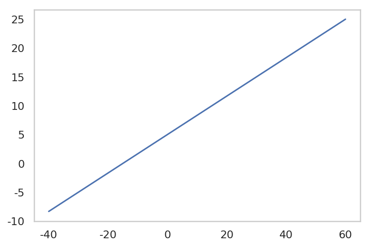
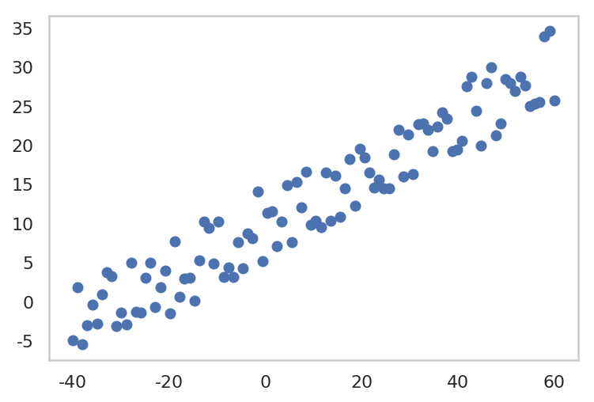
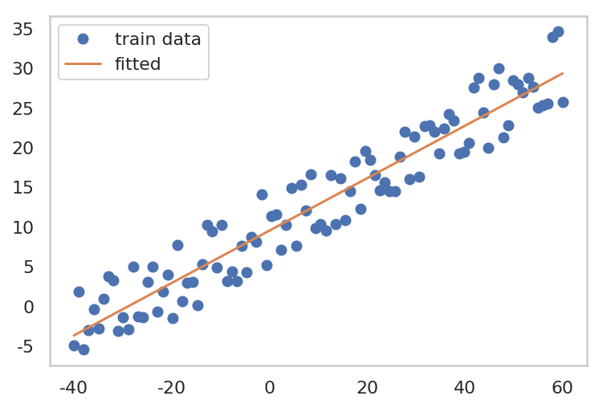
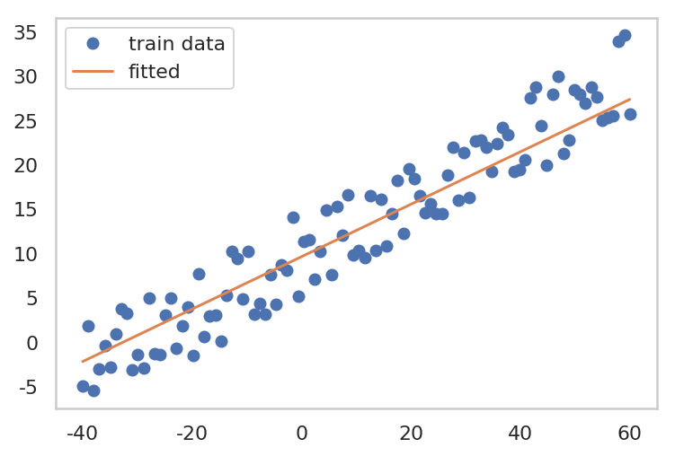

Linear Regression through Pytorch
이번 포스트의 목적은 Linear Model을 Pytorch을 통해 구현해보며, 개인적으로 Pytorch의 사용을 연습하며 적응력을 높여보는 것입니다.
Import Library 1 2 3 4 5 6 7 8 9 10 import torchimport torch.optim as optimimport matplotlib.pyplot as pltimport numpy as npimport warningswarnings.filterwarnings("ignore" ) %config InlineBackend.figure_format = 'retina' %matplotlib inline
Generate Toy Data $ y = \frac{1}{3} x + 5 $ 와 약간의 noise 를 합쳐 100 개의 toy data를 만들겠습니다.
1 2 3 4 5 f = lambda x: 1.0 /3.0 * x + 5.0 x = np.linspace(-40 , 60 , 100 ) fx = f(x)
1 2 3 plt.plot(x, fx) plt.grid() plt.show()

1 2 3 4 5 6 y = fx + 10 * np.random.rand(len(x)) plt.plot(x, y, 'o' ) plt.grid() plt.show()

1. Gradient Descent
Model (hypothesis) 를 설정합니다.
Loss Function 을 정의합니다. (여기선, MSE loss 를 사용하겠습니다.)
gradient 를 계산합니다.
parameter 를 update 합니다.
1 2 3 4 x_train = torch.FloatTensor(x) y_train = torch.FloatTensor(y) print("x_train Tensor shape: " , x_train.shape) print("y_train Tensor shape: " , y_train.shape)
x_train Tensor shape: torch.Size([100])
y_train Tensor shape: torch.Size([100])
1 2 3 4 5 6 7 8 9 10 11 12 13 14 15 16 17 18 19 20 21 22 23 24 25 26 W = torch.zeros(1 , requires_grad=True ) b = torch.zeros(1 , requires_grad=True ) optimizer = optim.SGD([W, b], lr=0.001 ) epochs = 3000 for epoch in range(1 , epochs + 1 ): model = W * x_train + b loss = torch.mean((model - y_train)**2 ) optimizer.zero_grad() loss.backward() optimizer.step() if epoch % 500 == 0 : print("epoch: {} -- Parameters: W: {} b: {} -- loss {}" .format(epoch, W.data, b.data, loss.data))
epoch: 500 -- Parameters: W: tensor([0.3709]) b: tensor([5.6408]) -- loss 22.728315353393555
epoch: 1000 -- Parameters: W: tensor([0.3467]) b: tensor([7.9427]) -- loss 11.399767875671387
epoch: 1500 -- Parameters: W: tensor([0.3368]) b: tensor([8.8829]) -- loss 9.51008415222168
epoch: 2000 -- Parameters: W: tensor([0.3327]) b: tensor([9.2669]) -- loss 9.194862365722656
epoch: 2500 -- Parameters: W: tensor([0.3311]) b: tensor([9.4237]) -- loss 9.142287254333496
epoch: 3000 -- Parameters: W: tensor([0.3304]) b: tensor([9.4878]) -- loss 9.133516311645508
1 2 3 4 5 plt.plot(x, y, 'o' , label="train data" ) plt.plot(x_train.data.numpy(), W.data.numpy()*x + b.data.numpy(), label='fitted' ) plt.grid() plt.legend() plt.show()

2. Stochastic Gradient Descent
Model (hypothesis) Setting
Loss Function Setting
최적화 알고리즘 선택
shuffle train data
mini-batch 마다 W, b 업데이트
1 2 3 4 5 6 7 8 9 10 11 12 13 14 15 16 def generate_batch (batch_size, x_train, y_train) : assert len(x_train) == len(y_train) result_batches = [] x_size = len(x_train) shuffled_id = np.arange(x_size) np.random.shuffle(shuffled_id) shuffled_x_train = x_train[shuffled_id] shuffled_y_train = y_train[shuffled_id] for start_idx in range(0 , x_size, batch_size): end_idx = start_idx + batch_size batch = [shuffled_x_train[start_idx:end_idx], shuffled_y_train[start_idx:end_idx]] result_batches.append(batch) return result_batches
1 2 3 4 5 6 7 8 9 10 11 12 13 14 15 16 17 18 19 W = torch.zeros(1 , requires_grad=True ) b = torch.zeros(1 , requires_grad=True ) optimizer = optim.SGD([W, b], lr=0.001 ) epochs = 10000 for epoch in range(1 , epochs + 1 ): for x_batch, y_batch in generate_batch(10 , x_train, y_train): model = W * x_batch + b loss = torch.mean((model - y_batch)**2 ) optimizer.zero_grad() loss.backward() optimizer.step() if epoch % 500 == 0 : print("epoch: {} -- Parameters: W: {} b: {} -- loss {}" .format(epoch, W.data, b.data, loss.data))
epoch: 500 -- Parameters: W: tensor([0.0890]) b: tensor([9.5399]) -- loss 162.1055450439453
epoch: 1000 -- Parameters: W: tensor([0.3672]) b: tensor([9.5366]) -- loss 12.424881935119629
epoch: 1500 -- Parameters: W: tensor([0.3560]) b: tensor([9.5097]) -- loss 7.826609134674072
epoch: 2000 -- Parameters: W: tensor([0.3375]) b: tensor([9.5556]) -- loss 13.15934944152832
epoch: 2500 -- Parameters: W: tensor([0.2462]) b: tensor([9.5157]) -- loss 11.582895278930664
epoch: 3000 -- Parameters: W: tensor([0.3097]) b: tensor([9.5111]) -- loss 9.991677284240723
epoch: 3500 -- Parameters: W: tensor([0.2497]) b: tensor([9.5532]) -- loss 20.481367111206055
epoch: 4000 -- Parameters: W: tensor([0.4388]) b: tensor([9.5390]) -- loss 20.827198028564453
epoch: 4500 -- Parameters: W: tensor([0.1080]) b: tensor([9.4959]) -- loss 140.0277862548828
epoch: 5000 -- Parameters: W: tensor([0.3188]) b: tensor([9.4829]) -- loss 6.635367393493652
epoch: 5500 -- Parameters: W: tensor([0.2553]) b: tensor([9.5017]) -- loss 25.45773696899414
epoch: 6000 -- Parameters: W: tensor([0.2490]) b: tensor([9.5489]) -- loss 9.580666542053223
epoch: 6500 -- Parameters: W: tensor([0.3189]) b: tensor([9.5347]) -- loss 12.585128784179688
epoch: 7000 -- Parameters: W: tensor([0.3026]) b: tensor([9.4874]) -- loss 8.298829078674316
epoch: 7500 -- Parameters: W: tensor([0.3507]) b: tensor([9.6815]) -- loss 13.348054885864258
epoch: 8000 -- Parameters: W: tensor([0.1423]) b: tensor([9.5220]) -- loss 32.567440032958984
epoch: 8500 -- Parameters: W: tensor([0.7147]) b: tensor([9.5182]) -- loss 75.97190856933594
epoch: 9000 -- Parameters: W: tensor([0.5170]) b: tensor([9.5289]) -- loss 39.07848358154297
epoch: 9500 -- Parameters: W: tensor([0.3748]) b: tensor([9.5590]) -- loss 10.358983993530273
epoch: 10000 -- Parameters: W: tensor([0.2958]) b: tensor([9.6088]) -- loss 7.410649299621582
Stochasitic 하게 loss의 gradient 를 계산하여, parameter update를 하므로, loss 가 굉장히 oscilation 이 나타나며 감소하는 것을 볼 수 있다.
1 2 3 4 5 plt.plot(x, y, 'o' , label="train data" ) plt.plot(x_train.data.numpy(), W.data.numpy()*x + b.data.numpy(), label='fitted' ) plt.grid() plt.legend() plt.show()

![[GCP] Computing Engine 환경설정](/images/thumbnail.svg)